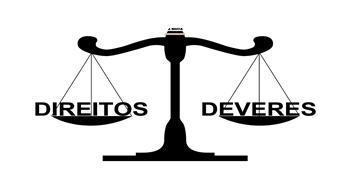

Cidadania é um conceito que possibilita uma série de significados que, de modo geral, refere-se a tudo aquilo que está relacionado aos direitos e deveres de uma pessoa ou povo num território.
A cidadania é a expressão máxima do direito, pois este existe para os cidadãos, e pode ser dividida em:
- Cidadania política: garantia de direitos à participação política (votar, ser votado, organização em sindicatos e movimentos sociais);
- Cidadania civil: garantia de direitos relativos á liberdade (liberdade de expressão, de locomoção, de credo e outras liberdades individuais);
- Cidadania social - garantia de direitos relativos à dignidade da vida humana (respeito aos direitos humanos, direito ao trabalho, à alimentação, à moradia, ao lazer, à saúde, à educação, etc.).
Contudo, cidadania também significa obedecer às leis e às normas que se relacionam com a vida em sociedade e o bem comum.
O Conceito de Cidadania
A palavra "cidadania" vem do latim civitas, que significa "cidade". Portanto, os cidadãos são aqueles e aquelas que coabitam e dividem os espaços públicos. Para isso, possuem os direitos civis, políticos e sociais que se desenvolvem a partir da ideia do que é melhor para o grupo social.
É importante notar que a cidadania é um processo contínuo e em constante transformação (quase sempre cumulativas). O poder emana do povo, que se submete à organização do Estado para que esse possa garantir os seus direitos e o bem de todos.
Para o efetivo direito à cidadania, muitas vezes, os indivíduos devem cumprir alguns requisitos como:
- Nacionalidade: ter nascido ou estar equiparado aos nascidos em determinado território. Por exemplo, no Brasil, todas as pessoas nascidas no Brasil ou de pais brasileiros são considerados cidadãos, o mesmo acontece com estrangeiros que pedem sua naturalização;
- Idade: alguns direitos e deveres estão de acordo com a idade do cidadão. Por exemplo, obrigatoriedade da educação dos 4 aos 17, o direito ao voto nas eleições aos 16 anos e a maioridade civil aos 18;
- Estar em conformidade com a lei: os condenados à prisão possuem seus direitos políticos suspensos e são restritos os seus direitos à liberdade.
Por estar intrinsecamente ligada à noção de direitos, a cidadania pressupõe, em contrapartida, deveres.
Direitos e Deveres
 balançaExemplos de direitos:
- Saúde;
- Educação;
- Moradia;
- Trabalho;
- Previdência Social;
- Lazer.
Exemplos de deveres:
- Cumprimento das leis;
- Eleição de governantes através do voto obrigatório;
- Serviço militar obrigatório (no caso dos homens);
- Pagamento de impostos.
Podemos ainda classificar os direitos do cidadão (T.H. Marshall, 1950) como sendo de natureza civil, ou seja, aqueles inerentes à liberdade individual, liberdade de expressão e de pensamento; o direito à propriedade e à justiça.
Existem aqueles de natureza política, como o direito de participação do exercício do poder político elegendo e sendo eleito. Por fim, os diretos de caráter social, como o bem-estar econômico e social.
De modo ideal, a cidadania seria o exercício pleno dos direitos políticos, civis e sociais, numa completa liberdade participativa no meio social.
A Cidadania na História
Apesar do conceito de cidadania definir-se na Grécia clássica e na Roma antiga, podemos notar os atributos embrionários em várias sociedades da Antiguidade. Do mesmo modo que a cidadania tem sua origem na palavra latina civitas, que significa cidade, para os gregos as cidades eram as pólis e deram origem à palavra política.
De toda forma, em Atenas a prática cidadã deu início à democracia, regime político que favorece a participação política e a cidadania. É importante destacar que em toda Grécia, assim como Atenas, somente os homens livres e nascidos na cidade podiam ser considerados cidadãos (a minoria da população). Desse modo, estrangeiros, escravos, crianças e as mulheres eram excluídos do direito à cidadania.
No final do século XVIII, com o surgimento da Modernidade e da estruturação do Estado-Nação, o termo "cidadão" passou a designar aqueles que habitavam a cidade. O crescimento dos movimentos sociais, a participação popular na vida pública e a criação do Estado de Bem-Estar Social (Welfare State), os direitos sociais tornam-se atributos necessários para a cidadania.
Texto de: Toda Matéria ·